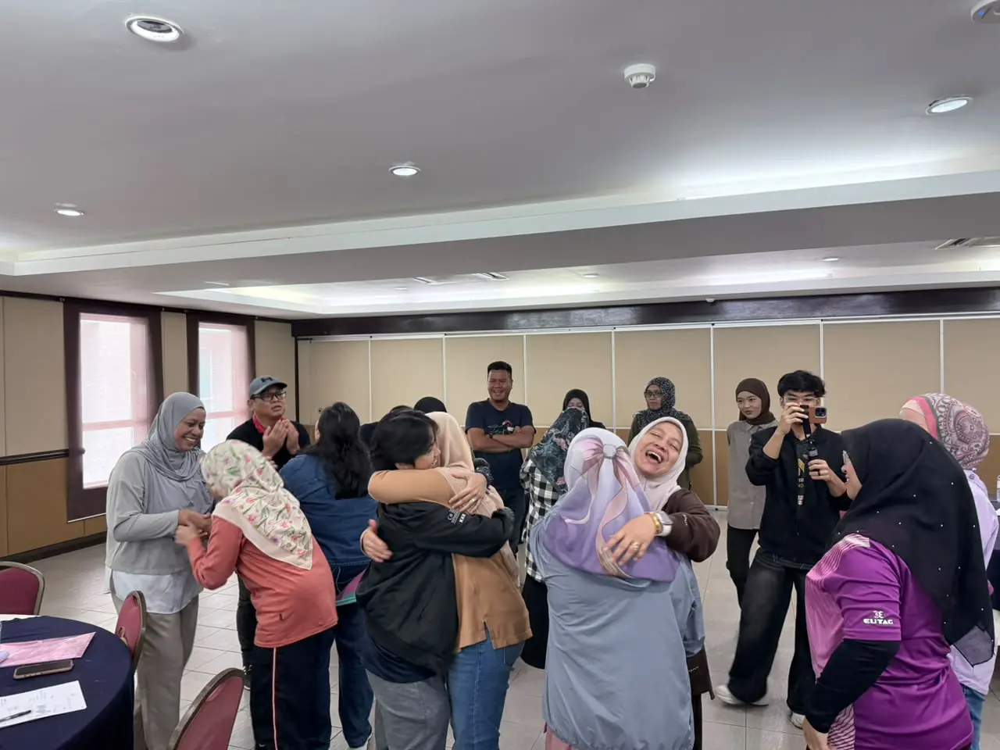
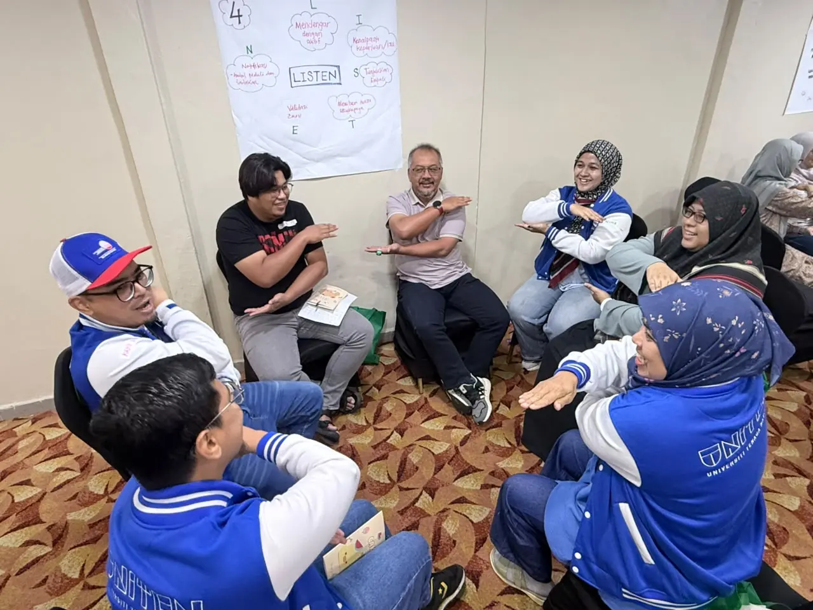
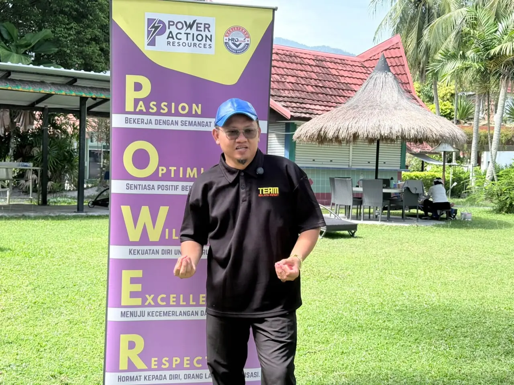
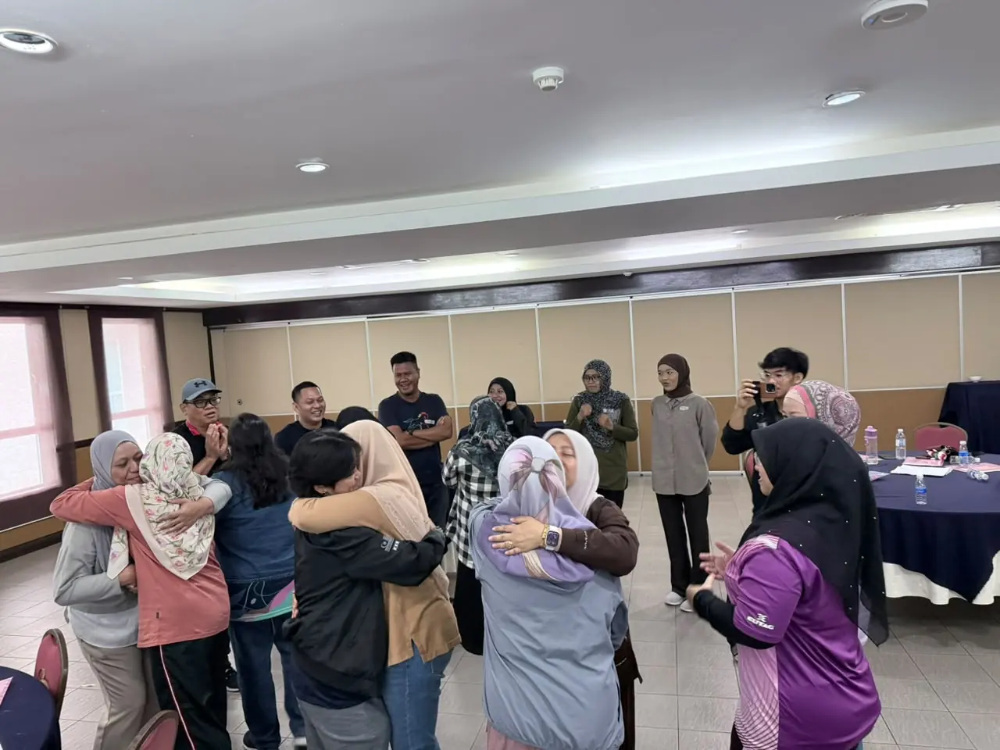
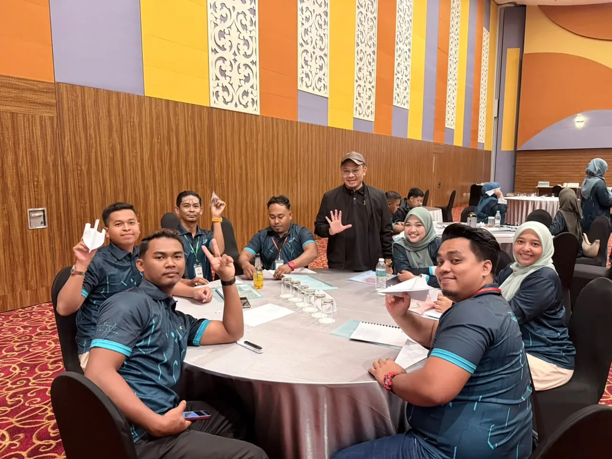

Team Building Berkesan di Kelantan: 7 Ciri Program yang Benar-Benar Mengubah Pasukan
Ramai organisasi pernah menganjurkan team building yang seronok pada hari itu, tetapi tiada perubahan selepas peserta kembali bekerja. Artikel ini menerangkan 7 ciri team building berkesan — supaya pelaburan masa dan wang syarikat anda di Kelantan benar-benar membuahkan hasil.

Seronok sahaja tidak cukup
Ramai majikan bertanya: bagaimana rupa team building berkesan Kelantan yang sebenar? Jawapannya mudah — team building yang berkesan bukan diukur dengan berapa kuat peserta ketawa, tetapi dengan apa yang berubah selepas program: cara mereka berkomunikasi, bekerjasama, menyelesaikan masalah dan bertanggungjawab terhadap tugas. Keseronokan ialah pintu masuk — perubahan tingkah laku ialah matlamatnya.
7 ciri team building berkesan
1. Bermula dengan objektif yang jelas
Program berkesan dibina daripada cabaran sebenar organisasi — bukan pakej aktiviti yang sama untuk semua. Sebelum program, penyedia latihan patut bertanya tentang objektif, latar peserta dan isu pasukan.
2. Aktiviti dipilih mengikut tujuan, bukan sekadar hiburan
Setiap aktiviti ada sebab. Cabaran kapal terbang kertas, misalnya, boleh melatih perancangan dan pembahagian peranan; aktiviti mendengar aktif melatih empati dan komunikasi.

3. Ada sesi refleksi (debrief) selepas setiap aktiviti
Di sinilah pembelajaran sebenar berlaku. Fasilitator membimbing peserta mengaitkan apa yang berlaku dalam aktiviti dengan situasi di tempat kerja: siapa yang memimpin, apa yang menghalang komunikasi, apa yang patut dibuat secara berbeza.
4. Melibatkan semua peserta
Gabungan aktiviti dalam dewan, luar dan berkumpulan kecil memastikan peserta yang pendiam, lebih berusia atau kurang aktif juga mendapat peranan.
5. Berpaksikan nilai yang mudah diingat
Nilai yang jelas membantu peserta membawa pulang mesej program. Dalam program Power Action Resources, peserta diperkenalkan kepada nilai POWER (Passion, Optimism, Willpower, Excellence, Respect) dan ACTION (Accountability, Commitment, Teamwork, Integrity, Opportunity, Nurture).

6. Dikendalikan oleh fasilitator berpengalaman
Fasilitator yang memahami dinamika manusia tahu bila perlu menolak, bila perlu berhenti, dan bagaimana mengendalikan emosi yang timbul. Latar belakang kaunseling dan psikologi membantu sesi lebih selamat dan bermakna.
7. Ada tindakan susulan
Program berkesan berakhir dengan komitmen tindakan: apa yang pasukan akan buat secara berbeza mulai esok. Penyelia boleh memantau komitmen ini dalam mesyuarat seterusnya.
Tanda-tanda program anda berkesan
- Peserta boleh menerangkan pengajaran utama program dengan ayat mereka sendiri.
- Komunikasi antara jabatan atau antara penyelia dan staf lebih terbuka.
- Pasukan mempunyai komitmen tindakan yang jelas dan dipantau.
- Peserta mahu menyertai program seterusnya.

5 kesilapan yang menjadikan team building tidak berkesan
- Memilih aktiviti kerana "trending". Aktiviti yang popular belum tentu sesuai dengan masalah pasukan anda.
- Pengurusan tidak hadir. Bila pemimpin tidak turut serta, peserta menganggap program itu tidak penting.
- Melangkau sesi refleksi. Tanpa perbincangan, aktiviti hanyalah permainan.
- Satu program untuk semua. Pasukan jualan, operasi dan pentadbiran mungkin memerlukan penekanan berbeza.
- Tiada pemantauan selepas program. Komitmen yang tidak dipantau akan dilupakan.
Peranan pengurusan sebelum dan selepas program
Team building paling berkesan apabila pihak pengurusan terlibat sejak awal:
- Sebelum program — kongsikan isu sebenar pasukan dengan penyedia latihan secara jujur, dan terangkan kepada pekerja kenapa program diadakan.
- Semasa program — sertai aktiviti sebagai ahli pasukan, bukan sebagai pemerhati.
- Selepas program — rujuk semula nilai dan komitmen tindakan dalam mesyuarat, dan beri pengiktirafan kepada perubahan positif.
Sokongan pengurusan inilah yang menukar pengalaman sehari menjadi perubahan budaya kerja.

Team building berkesan di Kelantan bersama Power Action Resources
Bagi syarikat dan organisasi di Kelantan — sama ada di Kota Bharu, Machang atau daerah lain — program boleh dijalankan di dewan hotel, resort, tapak perkhemahan atau premis syarikat sendiri. Program dikendalikan oleh Afizul Mohammad — HRD Corp Trainer dan kaunselor berdaftar dengan lebih 15 tahun pengalaman latihan korporat dan kerajaan, dan telah mengendalikan lebih 10,000 peserta. Setiap program disesuaikan mengikut objektif, latar peserta dan keperluan organisasi, dan Power Action Resources ialah HRD Corp Registered Training Provider.
Soalan lazim
Apakah ciri utama team building yang berkesan?
Objektif yang jelas, aktiviti yang dipilih mengikut tujuan, sesi refleksi selepas aktiviti, penglibatan semua peserta, nilai yang mudah diingat, fasilitator berpengalaman dan tindakan susulan selepas program.
Bagaimana mengukur keberkesanan team building?
Lihat perubahan selepas program: komunikasi lebih terbuka, komitmen tindakan dipantau, dan peserta boleh menerangkan pengajaran program. Bincangkan cara pemantauan dengan penyedia latihan sebelum program.
Bolehkah program disesuaikan untuk syarikat kami di Kelantan?
Ya. Setiap program Power Action Resources disesuaikan mengikut objektif organisasi, latar peserta dan keperluan pasukan.